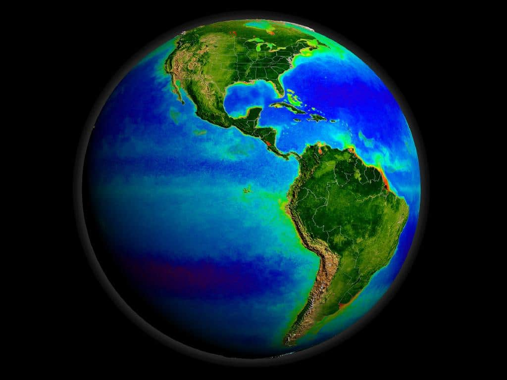
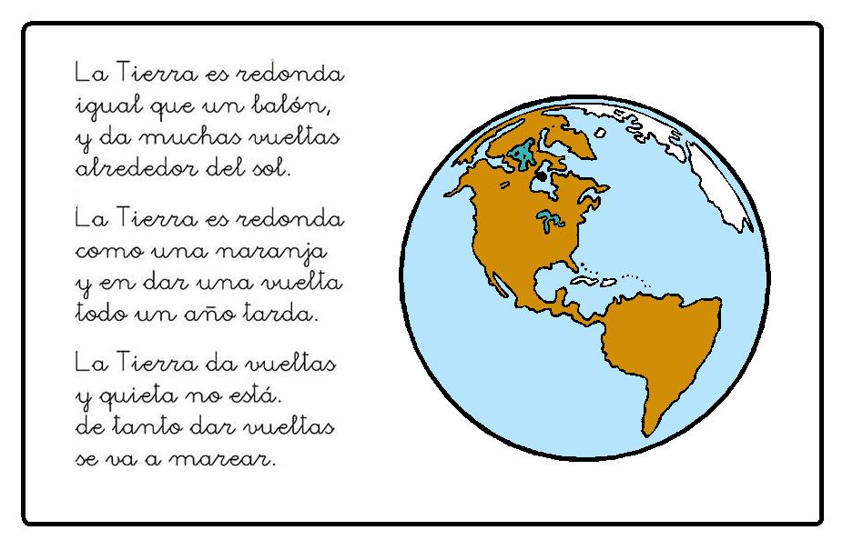

Día Internacional de la Tierra 22 de Abril
Realizado por:
Yameli Patricia Geronimo Castillo
4 "F"
Especialidad:
Programación
Submodulo:
Desarrolla Aplicaciones Moviles
Docente:
Lic.José Antonio Gómez Hernández
4 "F"
Desarrolla Aplicaciones Moviles
Lic.José Antonio Gómez Hernández
El 22 de abril se celebra el Día Mundial de la Tierra. Esta fecha fue elegida porque el 22 de abril de 1970 una manifestación en Estados Unidos para que se creara en el Gobierno una agencia ambiental que trabaje sobre las problemáticas medioambientales El impulsor de la protesta fue el senador y activista ambiental Gaylord Nelson, quien convocó a miles de universidades, escuelas primarias y secundarias entre otras comunidades a participar del pedido. Gracias a la expresión social el Ejecutivo estadounidense creó Environmental Protection Agency (Agencia de Protección Ambiental) y varias leyes de protección del medio ambiente
Dos años después se llevó adelante el encuentro a nivel mundial: Cumbre de la Tierra de Estocolmo. La intensión es sensibilizar a la humanidad de que es parte del planeta Tierra y sus huellas marcarán el destino del mundo, por eso reducir (el consumo), reciclar y reutilizar objetos es la forma en que cada uno día a día puede colaborar para evitar la contaminación ambiental
Ciudades Verdes
Las Naciones Unidas proponen generar (Ciudades Verdes) El objetivo del Día de la Tierra es movilizar a millones de personas para lograr un medio ambiente saludable y sostenible. En la actualidad, más de la mitad de la población mundial vive en las ciudades A medida que la población urbana crece y los efectos del cambio climático empeoran, nuestras ciudades deben evolucionar. Es hora de que invirtamos en energías renovables y en eficiencia energética, reconstruyamos nuestras ciudades y empecemos a resolver el problema del cambio climático
Desde el año de 1962, el Senador y activista Gaylord Nelson venía preparando el espacio para que el tema ambiental hiciera parte de la agenda gubernamental en los Estados Unidos, En ese tiempo, los activistas y grupos ecológicos eran considerados excluidos y no se les daba ninguna importancia. En 1969 finalmente pudo convocar una gran cantidad de personas con el fin de pedir la inclusión del tema ambiental en la agenda del Congreso de los Estados Unidos. Después de casi diez años de lucha ante el gobierno, el Senador Gaylord Nelson logró que se estableciera el 22 de abril como Día Mundial de la Tierra en el año de 1970. En esta fecha ocurrió la primera celebración la cual tuvo un impacto tan grande que se congregaron dos mil universidades, mil escuelas (primarias y secundarias), más de veinte millones de personas y centenares de comunidades en diferentes marchas. La presión social tuvo sus logros y el gobierno de los Estados Unidos creó la “Agencia de Protección Ambiental” con una serie de leyes destinadas a la protección del medio ambiente, relacionadas con el aire limpio, el agua limpia y la conservación de especies en vía de extinción. A partir de entonces, cada año en esta fecha, el mundo entero reflexiona y se moviliza por una tierra mejor. En 1972 se celebró la primera conferencia internacional sobre el medio ambiente. La Cumbre de la Tierra de Estocolmo (celebrada en Estocolmo Suecia), entre el 5 y 16 de junio del mismo año, fue la primera gran conferencia de la ONU sobre discusiones ambientales Internacionales que marcó un punto de cambio en el desarrollo de la política del medio ambiente y poder sensibilizar a los líderes mundiales sobre la magnitud de los problemas ambientales. Hasta este siglo pocos pensaron que los seres humanos viviendo en una extensión de tierra sin límites (aparentemente) y con grandes extensiones de agua abundante, podrían causar daños irreparables al medio ambiente. Sin embargo, hoy los gobiernos y la gente en general en todo el mundo buscan estrategias y luchan evitando los derrames de petróleo, la contaminación del agua potable, la deforestación, la lluvia ácida y la posibilidad de rápidos cambios climáticos, los cuales causarían dificultades futuras. En 1975 un grupo internacional de estudio se reunió en Belgrado, Yugoslavia, propuso un marco de referencia mundial para la educación ambiental, que se llamó la “Carta de Belgrado”, la cual afirma que la meta es hacer que la población mundial se concientice y preocupe por el medio ambiente capacitándose para buscar soluciones a los problemas actuales y prevenir problemas nuevos.
Celebramos el Día Internacional de la Madre Tierra para recordar que el planeta y sus ecosistemas nos dan la vida y el sustento. Con este día, asumimos, además, la responsabilidad colectiva, como nos recordaba la Declaración de Río de 1992, de fomentar esta armonía con la naturaleza y la Madre Tierra. Este día nos brinda también la oportunidad de concienciar a todos los habitantes del planeta acerca de los problemas que afectan a la Tierra y a las diferentes formas de vida que en él se desarrollan. Este año, se celebra el octavo Diálogo sobre armonía con la naturaleza, el día 23 de abril en la Sede de la ONU de Nueva York. Este diálogo interactivo es una buena plataforma para tratar temas como la producción sostenible y los patrones de consumo en la Armonía con la naturaleza. Asimismo, el diálogo quiere fomentar que los ciudadanos y las sociedades se conciencien sobre cómo se relacionan y cómo pueden relacionarse con el mundo natural; al mismo tiempo, pretende mejorar los cimientos éticos de la relación entre la humanidad y la Tierra, en términos de desarrollo sostenible «Madre Tierra» es una expresión común utilizada para referirse al planeta Tierra en diversos países y regiones, lo que demuestra la interdependencia existente entre los seres humanos, las demás especies vivas y el planeta que todos habitamos La Tierra y sus ecosistemas son nuestro hogar. Para alcanzar un justo equilibrio entre las necesidades económicas, sociales y ambientales de las generaciones presentes y futuras, es necesario promover la armonía con la naturaleza y el planeta.
El 23 de abril de 2018 se realizó en la sede de las Naciones Unidas en Nueva York, el 8° Diálogo Interactivo sobre Armonía con la Naturaleza, en ocasión de la conmemoración del Día Internacional de la Madre Tierra. El evento fue convenido por el Presidente de la Asamblea General, Miroslav Lajcak, quien destacó la importancia del Diálogo para intercambiar ideas sobre desarrollo y patrones de producción y consumo sostenibles en armonía con la naturaleza. Durante la jornada, se discutió sobre cómo los marcos legales y económicos de la Jurisprudencia de la Tierra impactan la implementación de patrones de producción y consumo sostenibles en Armonía con la Naturaleza. El Diálogo se realizó con el objetivo de inspirar a los ciudadanos y las sociedades a reconsiderar la relación que mantienen con la naturaleza, acorde a la meta 12.8 de los Objetivos de Desarrollo Sostenible con respecto a los patrones de consumo y producción sostenibles. Mejorar la base ética de la relación entre la especie humana y la Tierra en el contexto del desarrollo sostenible no es solo beneficioso, sino también necesario.
Nuestra Tierra es un planeta del sistema solar girando alrededor de un sol en la tercera órbita interna, es el más denso y el quinto en tamaño de los ocho del sistema solar. Si pensamos en todo lo que contiene, la gran cantidad de especies que conviven con el hombre, es inimaginable. El planeta azul es inmenso y ofrece un equilibrio perfecto para la naturaleza
Hacia una tierra sostenible La Asamblea General designa en su resolución A/RES/63/278 el 22 de abril como el Día Internacional de la Madre Tierra, teniendo en cuenta que en muchos países se celebra el día de la Tierra, y con el objetivo de alcanzar un justo equilibrio entre las necesidades económicas, las sociales y las ambientales de las generaciones presentes y futuras, y para promover la armonía con la naturaleza y la Tierra. Invita a todos los Estados Miembros, las organizaciones del sistema de las Naciones Unidas, las organizaciones internacionales, regionales y subregionales, la sociedad civil, las organizaciones no gubernamentales y las partes interesadas a observar el Día Internacional de la Madre Tierra y crear conciencia al respecto, según proceda. La Conferencia de las Naciones Unidas sobre el Medio Humano de 1972 celebrada en Estocolmo sentó las bases de la toma de conciencia mundial sobre la relación de interdependencia entre los seres humanos, otros seres vivos y nuestro planeta. Asimismo, se estableció el 5 de junio como el Día Mundial del Medio Ambiente y se creó el Programa de las Naciones Unidas para el Medio Ambiente (PNUMA), la agencia de la ONU encargada de establecer la agenda ambiental a nivel global, promover la implementación coherente de la dimensión ambiental del desarrollo sostenible en el sistema de las Naciones Unidas y actuar como un defensor autorizado del medio ambiente. En 1992, más de 178 países firmaron la Agenda 21, la Declaración de Río sobre el Medio Ambiente y el Desarrollo, y la Declaración de Principios para la Gestión Sostenible de los Bosques en la Conferencia de Naciones Unidas sobre el Medio Ambiente y el Desarrollo (UNCED), que tuvo lugar en Río de Janeiro (Brasil) del 3 y el 14 de junio de 1992. En el año 2005, la Asamblea General declaró 2008 como el Año Internacional del Planeta Tierra para promover la enseñanza de las ciencias de la Tierra para facilitar a la humanidad los instrumentos necesarios para el uso sostenible de los recursos naturales y para construir la infraestructura científica esencial para el desarrollo sostenible. En 2012 se celebró la Conferencia de las Naciones Unidas sobre el Desarrollo Sostenible, también conocida como Rio+20. Como resultado, se elaboró un documento que contenía medidas y prácticas para implementar un desarrollo sostenible. Además, en Río, los Estados Miembros decidieron emprender un proceso para establecer los Objetivos de Desarrollo Sostenible (ODS), que se basarían en los Objetivos de Desarrollo del Milenio y coincidirían con la Agenda para el desarrollo después de 2015.